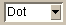

Open - Open a new dataset.
Export - Exports various data sets based on the results of the curve fitting.
Print - Set print parameters or send a plot of the current graph to specified printer.
Autoscale - Return the graph to its internal automatic scaling.
Zoom - User defined zoom area. After selecting this item, the user drags out a rectangle for the new axis limits.
Zoom In - Move the graph limits in on both axes 1 tic unit.
Zoom Out - Move the graph limits out on both axes 1 tic unit.
Zoom In Vertical - Move the graph limits in on the Y axis 1 tic unit.
Zoom Out Vertical - Move the graph limits out on the Y axis 1 tic unit.
Zoom In Horizontal - Move the graph limits in on the X axis 1 tic unit.
Zoom Out Horizontal - Move the graph limits out on the X axis 1 tic unit.
Pan Left - Move the graph limits of the X axis to the left 1 tic unit.
Pan Right - Move the graph limits of the X axis to the right 1 tic unit.
Pan Up - Move the graph limits of the Y axis up 1 tic unit.
Pan Down - Move the graph limits of the Y axis down 1 tic unit.
Grid - Select this button to show grid lines on the graph.
Minor Grid - Select this button to include minor grid lines on the graph.
Grid Color - Select the color for the grid lines.
Grid Width - Select the width of the grid lines.
 Grid Line Type - Select the type of lines for the grid.
Grid X Axis - Select the X axis to map grid lines.
Grid Y Axis - Select the Y axis to map grid lines.